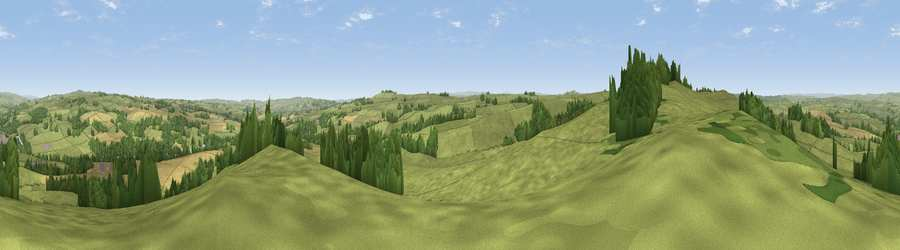

Viewpoint near Simonburn
#13558 in England · top 31% of its area beats it · near SimonburnWhere it is
The exact computed spot (NY 85975 75075). Click the marker for map links.
The view, rendered

A 360° render of this exact spot computed from the terrain model, tree cover and land cover — summer colours, afternoon light, calibrated against photographs of famous viewpoints. Real trees, hedges and buildings will differ in detail.
The panorama
Grey silhouette: terrain skyline in each direction (720 bearings, Earth curvature and refraction included). Dashed green: skyline with trees (+15 m) and buildings (+8 m) as obstacles. Blue strip: how far the ground is visible on each bearing.
Where the view opens
Wedge length = distance to the farthest visible ground on that bearing (vegetation-aware). Rings at 10, 25 and 50 km.
What fills the view
73% grassland · 14% cropland · 13% woodland ·
Angular shares of the visible panorama (visual magnitude), not map area. Landscape diversity 0.35 (0–1 Shannon).
Key numbers
More beautiful places nearby
The staircase of upgrades: each row has a higher view potential than everything closer. Driving times are estimates from straight-line distance, calibrated against real road routing — check an actual route before setting out.
| Place | Direction | Drive | Score |
|---|---|---|---|
| Viewpoint near Simonburn | W · 0 km | ~1 min | 62.5 |
| Viewpoint near Walwick | SE · 5 km | ~11 min | 62.8 |
| Viewpoint c11477_7613 | WSW · 6 km | ~12 min | 68.2 |
| Viewpoint near Bardon Mill | SW · 8 km | ~16 min | 71.0 |
| Viewpoint near Fourstones | SSE · 8 km | ~17 min | 71.4 |
| Viewpoint near West Woodburn | NE · 11 km | ~21 min | 73.4 |
| Darden Rigg | NNE · 25 km | ~41 min | 77.0 |
| Monkside | NW · 26 km | ~42 min | 78.4 |
55.06994, -2.22116 · source: screening · position refined by local search. Computed location — check access rights before visiting.